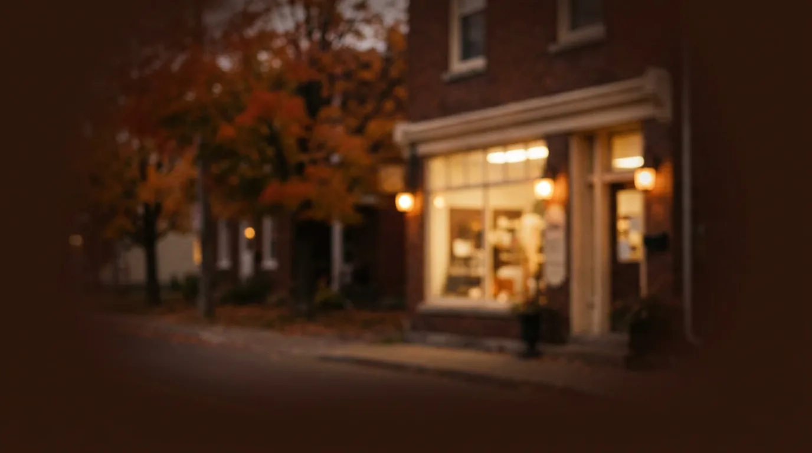

Bonbons et chocolats fins
À l'unité ou en boîte, à déguster sur place ou à rapporter à la maison.
Chocolaterie artisanale au cœur de Bedford. Fait à la main, une bouchée à la fois.
Riz soufflé, confiture maison, guimauve maison, le tout enrobé de chocolat : voilà la Capeline.
Venez nous voir au 48, rue Principale.
Heures et itinérairePendant une douzaine d'années de métier, Isabelle Parent a mis au point ses recettes ici, rue Principale, une fournée après l'autre. Depuis l'automne 2026, Nancy Boudreault et Sylvain Desgroseillers ont pris le relais, avec la même équipe de six personnes et les mêmes recettes.
Tout est encore fait à la main, avec un chocolat d'origine choisi avec soin. L'un des nouveaux propriétaires est de Bedford, et la boutique reste un arrêt de la Route des vins de Brome-Missisquoi.
Notre spécialité a donné son nom à la boutique. Quatre étages, tous faits ici :
Les saveurs changent au fil des saisons. Demandez en boutique celles du moment.
À l'unité ou en boîte, à déguster sur place ou à rapporter à la maison.
Pâques, Noël, Saint-Valentin, fête des Mères et des Pères : chaque saison arrive avec ses formes et ses saveurs.
Déposez-en une dans une tasse de lait chaud et regardez-la fondre. Idéal après une journée sur la Route des vins.
Une boîte de chocolats pour Pâques, Noël, la Saint-Valentin, un anniversaire ou un simple merci. On la compose avec vous, en boutique.
Vous pouvez aussi commander à l'avance et passer prendre votre boîte à la boutique.

48, rue Principale
Bedford (Québec) J0J 1A0
Sur la Route des vins de Brome-Missisquoi, dans les Cantons-de-l'Est.
| Lundi | Fermé |
|---|---|
| Mardi – mercredi | 10 h – 17 h |
| Jeudi – vendredi | 10 h – 18 h |
| Samedi | 10 h – 17 h |
| Dimanche | 11 h – 16 h |